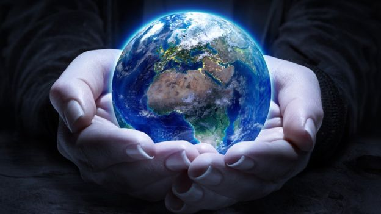
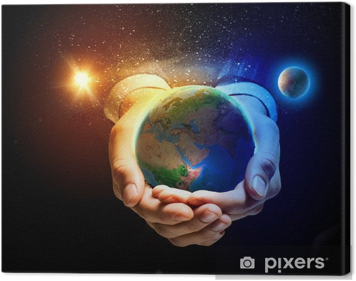

Día Internacional de la Madre Tierra 22 de abril
Realizado por:
Rosa Evelia Reyes Mateos
4 "E"
Especialidad
Desarrolla Aplicaciones Móviles
Docente:
Lic. José Antonio Gómez Hernández
Día de la madre Tierra
Rosa Evelia Reyes Mateos

4 "E"
Desarrolla Aplicaciones Móviles
Lic. José Antonio Gómez Hernández
Celebramos el Día Internacional de la Madre Tierra para recordar que el planeta y sus ecosistemas nos dan la vida y el sustento. Con este día, asuminos, además, la responsabilidad colectiva, como nos recordaba la Declaración de Rio de 1992, de fomentar esta armonía con la naturaleza y la madre Tierra.
Este día nos brinda también la oportunidad de concienciar a todos los habitantes del planeta acerca de los problemas que afectan a la Tierra y a las diferentes formas de vida que en él se desarrollan.


HISTORIA DEL DÍA MUNDIAL DE LA TIERRA
Desde el año de 1962, el Senador y activista Gaylord Nelson venía preparando el espacio para que el tema ambiental hiciera parte de la agenda gubernamental en los Estados Unidos, En ese tiempo, los activistas y grupos ecológicos eran considerados excluidos y no se les daba ninguna importancia.
En 1969 finalmente pudo convocar una gran cantidad de personas con el fin de pedir la inclusión del tema ambiental en la agenda del Congreso de los Estados Unidos.
Después de casi diez años de lucha ante el gobierno, el Senador Gaylord Nelson logró que se estableciera el 22 de abril como Día Mundial de la Tierra en el año de 1970. En esta fecha ocurrió la primera celebración la cual tuvo un impacto tan grande que se congregaron dos mil universidades, mil escuelas (primarias y secundarias), más de veinte millones de personas y centenares de comunidades en diferentes marchas. La presión social tuvo sus logros y el gobierno de los Estados Unidos creó la “Agencia de Protección Ambiental” con una serie de leyes destinadas a la protección del medio ambiente, relacionadas con el aire limpio, el agua limpia y la conservación de especies en vía de extinción. A partir de entonces, cada año en esta fecha, el mundo entero reflexiona y se moviliza por una tierra mejor.
En 1972 se celebró la primera conferencia internacional sobre el medio ambiente. La Cumbre de la Tierra de Estocolmo (celebrada en Estocolmo Suecia), entre el 5 y 16 de junio del mismo año, fue la primera gran conferencia de la ONU sobre discusiones ambientales Internacionales que marcó un punto de cambio en el desarrollo de la política del medio ambiente y poder sensibilizar a los líderes mundiales sobre la magnitud de los problemas ambientales.
Hasta este siglo pocos pensaron que los seres humanos viviendo en una extensión de tierra sin límites (aparentemente) y con grandes extensiones de agua abundante, podrían causar daños irreparables al medio ambiente. Sin embargo, hoy los gobiernos y la gente en general en todo el mundo buscan estrategias y luchan evitando los derrames de petróleo, la contaminación del agua potable, la deforestación, la lluvia ácida y la posibilidad de rápidos cambios climáticos, los cuales causarían dificultades futuras.
En 1975 un grupo internacional de estudio se reunió en Belgrado, Yugoslavia, propuso un marco de referencia mundial para la educación ambiental, que se llamó la “Carta de Belgrado”, la cual afirma que la meta es hacer que la población mundial se concientice y preocupe por el medio ambiente capacitándose para buscar soluciones a los problemas actuales y prevenir problemas nuevos.
En 1991 varias organizaciones se reunieron a la conmemoración de este día, con el fin de impulsar estrategias que permitieran el cuidado del planeta tierra. El Programa de las Naciones Unidas para el Medio Ambiente (PNUMA), EL Fondo Mundial para la Naturaleza (WWF) y la Unión Internacional para la Conservación de la Naturaleza (UICN), establecieron una estrategia global que llevó por nombre: “Cuidando el Planeta Tierra”.

El domingo pasado 22 de abril se celebró el Día Internacional de la Madre Tierra, desde la CEDU participamos a través de la difusión y compromiso en la búsqueda de un justo equilibro entre las necesidades económicas, sociales y ambientales de las generaciones presentes y futuras, promoviendo una cultura armónica con la naturaleza y Madre Tierra.
«Madre Tierra» es una expresión común utilizada para referirse al Planeta Tierra en diversos países y regiones, lo que demuestra la interdependencia existente entre los seres humanos, las demás especies vivas y el planeta que todos habitamos.
La Tierra y sus ecosistemas son nuestro hogar. Para alcanzar un justo equilibrio entre las necesidades económicas, sociales y ambientales de las generaciones presentes y futuras, es necesario promover la armonía con la naturaleza y el planeta.
Celebramos el Día Internacional de la Madre Tierra para recordar que el planeta y sus ecosistemas nos dan la vida y el sustento. Con este día, asumimos, además, la responsabilidad colectiva, como nos recordaba la Declaración de Río de 1992, de fomentar esta armonía con la naturaleza y la Madre Tierra.
Este día nos brinda también la oportunidad de concienciar a todos los habitantes del planeta acerca de los problemas que afectan a la Tierra y a las diferentes formas de vida que en él se desarrollan.
El 23 de abril de 2018 se realizó en la sede de las Naciones Unidas en Nueva York, el 8° Diálogo Interactivo sobre Armonía con la Naturaleza, en ocasión de la conmemoración del Día Internacional de la Madre Tierra.
El evento fue convenido por el Presidente de la Asamblea General, Miroslav Lajcak, quien destacó la importancia del Diálogo para intercambiar ideas sobre desarrollo y patrones de producción y consumo sostenibles en armonía con la naturaleza.
Durante la jornada, se discutió sobre cómo los marcos legales y económicos de la Jurisprudencia de la Tierra impactan la implementación de patrones de producción y consumo sostenibles en Armonía con la Naturaleza.
El Diálogo se realizó con el objetivo de inspirar a los ciudadanos y las sociedades a reconsiderar la relación que mantienen con la naturaleza, acorde a la meta 12.8 de los Objetivos de Desarrollo Sostenible con respecto a los patrones de consumo y producción sostenibles.
Mejorar la base ética de la relación entre la especie humana y la Tierra en el contexto del desarrollo sostenible no es solo beneficioso, sino también necesario.
El paquete de medidas estratégicas diseñado por el quinteto de organizaciones ecologistas está compuesto por 17 demandas que abarcan medidas transversales que trascienden el medioambiente y van más allá con el fin de facilitar la transformación de todo el sistema.
En concreto, tal y como anunciaron los responsables de estas ONG durante la presentación de Un programa por la Tierra. Demandas para una legislatura sostenible, lo que defienden con estas 17 propuestas es lograr que la «sostenibilidad del modelo económico, las políticas centradas en la justicia social y ambiental y las medidas para generar un nuevo modelo de producción y consumo, con generación de empleo ligado al cuidado y mejora ambiental» marquen el camino en la nueva etapa política.
De forma resumida, estas son las 17 demandas:
1.ª Crear una Vicepresidencia de Sostenibilidad y Ministerio de Medio Ambiente.
2.ª Reforzar la Fiscalía Coordinadora de Medio Ambiente y Urbanismo y dotarla de más medios.
3.ª Reconocer y reforzar el papel de las organizaciones ambientales.
4.ª Establecer una Ley de Fiscalidad Ambiental que redistribuya la carga fiscal primando las buenas prácticas que promuevan el ahorro, la restauración ambiental y la creación de empleo ligado al medio ambiente.
5.ª Poner en marcha un plan ambicioso de mejora de la calidad del aire de ámbito estatal.
6.ª Prohibir de manera urgente el Bisfenol-A y otros disruptores endocrinos.
7.ª Prohibir el uso y abuso de animales con fines lúdicos o publicitarios a través de una Ley de Protección Animal.
8.ª Aprobar una Ley de Cambio Climático.
9.ª Realizar una auditoría energética de los costes reales del sistema como primer paso para poner en marcha una nueva política energética coherente que impulse el ahorro y la eficiencia energética, la producción descentralizada de energía renovable eliminando las subvenciones a los combustibles fósiles y acometiendo el cierre de las centrales nucleares tras 30 años de funcionamiento.
10.ª Aprobar una Ley de Movilidad Sostenible.
11.ª No construir más embalses ni trasvases.
12.ª Rediseñar una política agroalimentaria respetuosa con el medio ambiente.
13.ª No dar ni un paso atrás en la política de tolerancia cero contra la pesca ilegal —IUU—.
14.ª Apoyar a escala europea una política de Economía Circular ambiciosa que garantice una reducción del uso de recursos naturales por nuestra economía.
15.ª Dotar económicamente el Fondo para la Conservación de la Biodiversidad para garantizar el cumplimiento del Plan Estratégico para el Patrimonio Natural.
16.ª Derogar la modificación de la Ley de Costas para asegurar la conservación de los ecosistemas costeros amenazados.
17.ª Rechazar explícitamente el Tratado Transatlántico de Comercio e Inversiones (TTIP).